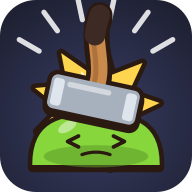

WhipBonk Privacy Policy
Effective date: November 21, 2026
This policy explains how the mobile game WhipBonk ("the app"), available on Google Play and the App Store, handles information. The app is developed by Artam Games, the studio name of Erdem Gürel ("we", "us").
Information we collect
We do not collect any information ourselves. The app does not ask for an account and does not use analytics. We do not run any servers and receive no personal data from the app. The app sends data over the internet only to the services described below: Google AdMob for ads, and Game Center or Google Play Games for leaderboards.
Advertising (Google AdMob)
The app shows ads served by Google AdMob, which is run by Google. There are two kinds: a video ad you can choose to watch to continue a run after losing your last life, and a full-screen ad that is shown at most once every three finished runs. Ads are limited to content suitable for general audiences.
To show ads, measure them and prevent fraud, the Google Mobile Ads SDK in the app collects and sends to Google: your device's advertising identifier (on iPhone and iPad only if you allow tracking; on Android the Android Advertising ID), your IP address and the approximate location derived from it, information about your device and operating system, information about how you interact with the ads, and diagnostics such as crash and performance data. Google uses this data under Google's privacy policy; see also how Google uses information from apps that use its services. We do not receive this data, apart from aggregated reports of how many ads were shown.
Your choices:
- EEA, UK and Switzerland: on first launch the app shows Google's consent form, where you can accept or refuse personalized ads and the related data processing. You can change your choice at any time in the game's Settings, under AD PRIVACY.
- iPhone and iPad: the app asks for permission to track you (App Tracking Transparency). If you do not allow it, the advertising identifier is not shared and ads are not personalized. You can change this in your device's Settings, under Privacy & Security > Tracking.
- Android: you can reset or delete your advertising ID, or opt out of ads personalization, in your device's Settings, under Google > Ads or Privacy > Ads.
- You can also manage how Google personalizes ads at My Ad Center.
Ads need an internet connection. Without one the game works the same way, without ads.
Game Center (iPhone and iPad)
On iPhone and iPad the app uses Apple's Game Center for its leaderboards. If you are signed in to Game Center, the app submits your Endless and Rush scores to Game Center, where they are shown with your Game Center nickname and avatar to other players on the leaderboards. Game Center is run by Apple, and Apple handles this data under Apple's privacy policy. We do not receive your Apple Account, email address or other contact details. You can sign out of Game Center or change who can see your profile in your device's Settings, under Game Center. If you are not signed in, nothing is sent and the game works the same way.
Google Play Games (Android)
On Android the app uses Google Play Games Services for its leaderboards. When the app starts, it signs you in to Google Play Games if you have a Play Games profile on the device. While you are signed in, the app submits your Endless and Rush scores to Google Play Games, where they are shown with your Play Games gamer name and avatar to other players on the leaderboards, depending on your profile's visibility settings. Google Play Games is run by Google, and Google handles this data, including the usage and diagnostics data its software collects, under Google's privacy policy. We do not receive your Google Account, email address or other contact details. You can change your profile's visibility, delete your Play Games data or sign out in the Google Play Games settings on your device. If you are not signed in, nothing is sent and the game works the same way.
Data stored on your device
The app saves your game progress (high scores, level stars, unlocked weapons and settings such as language, sound and music) in a file on your device. This file never leaves your device and we cannot access it. Deleting the app deletes this data.
Permissions
On Android the app uses the vibration permission for haptic feedback during play, the internet and network state permissions to load ads and leaderboards, and the advertising ID permission used by Google AdMob. On iPhone and iPad it asks for tracking permission as described above. It does not request access to your location, contacts, camera, microphone, photos or files.
Purchases
The current version of the app offers no in-app purchases. If a future version adds them, this policy will be updated before that version is released to describe what the payment providers process.
Children
The app is a game for a general audience and is not directed at children under 13. We do not knowingly collect personal information from children, and the ads it shows are limited to content suitable for general audiences.
Changes to this policy
If this policy changes, the new version will be posted on this page with a new effective date.
Contact
Questions about this policy: erdemgurell@gmail.com